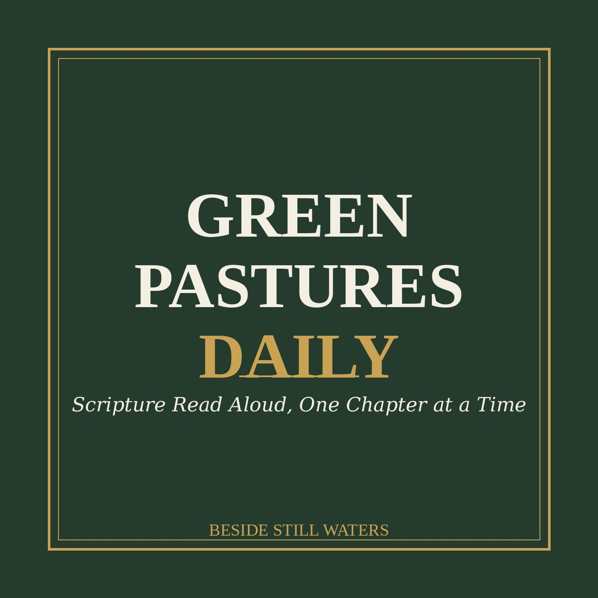

Scripture read aloud, one chapter at a time
A daily spoken reading of a full Bible chapter (King James Version), read slowly and clearly to help you rest, reflect, and hear God's Word beside still waters.
RSS Feed →New episodes are added automatically. Subscribe on Spotify, Apple Podcasts, or any podcast app using the RSS link above.